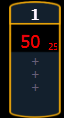

When working with the Server Channel, the following controls will be available:
{Intensity}
{Pan} and {Tilt} - used to adjust layers within the frame.
{Color} - filters color for all layers.
{FoView} - field of view, or perspective.
{Crossfade} - used to adjust the priority when devices in the pixel map are also used as desk channels. -100 gives the pixel map priority, and +100 give the desk channel priority. At 0 (the default) the output is calculated HTP for intensity and LTP for NPs.
The Virtual Media Server crossfade parameter level will display in subscript beside the intensity.

{Blend} - is a smoothing function for crossfades. It is a linear parameter that defaults to zero.
{Scale} - adjusts Scale of all layers.
{Aspect Ratio} - adjusts aspect ratio of all layers.
{XYZ Rotation Controls} - rotation control for all layers